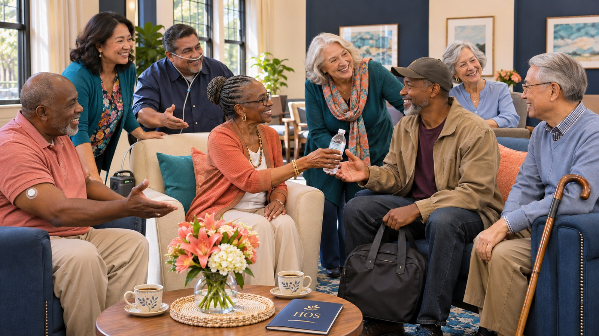
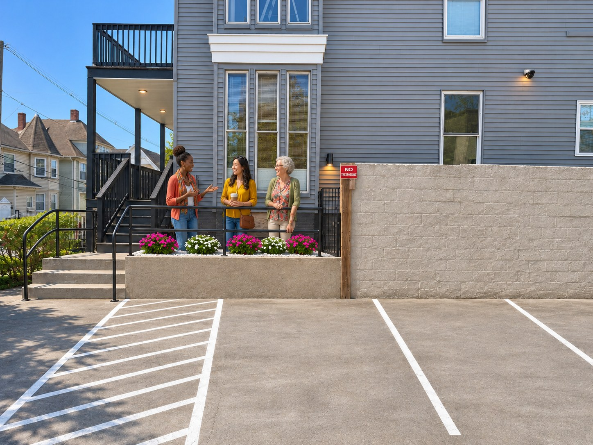
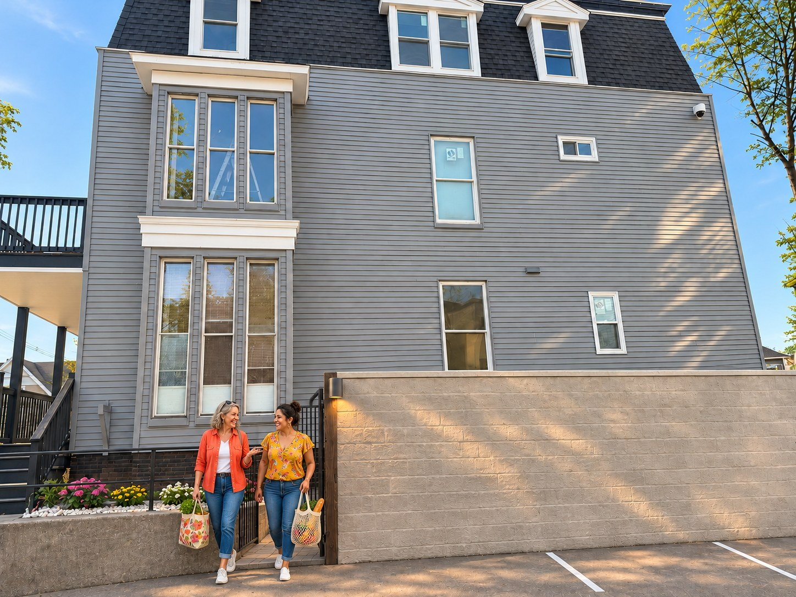
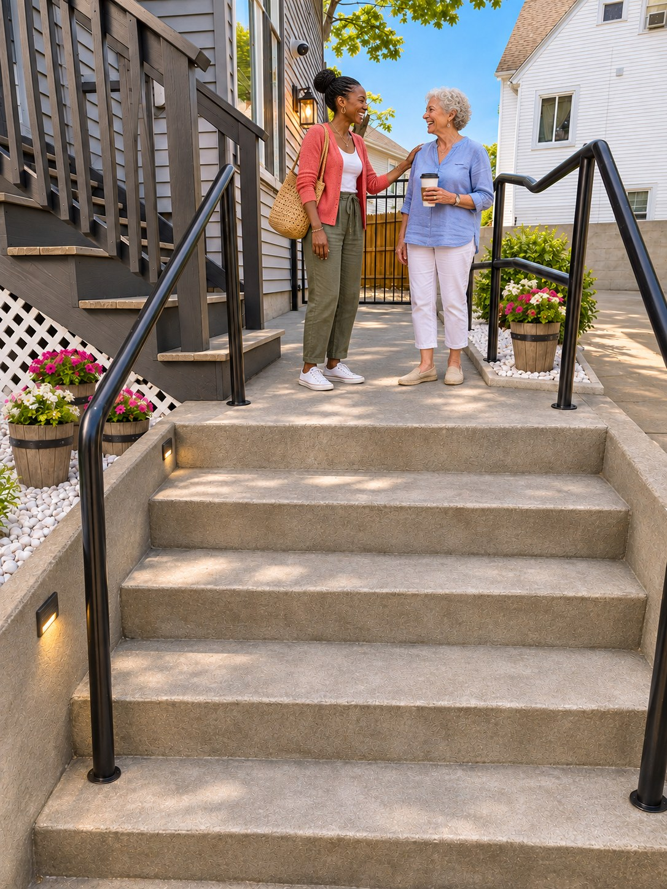
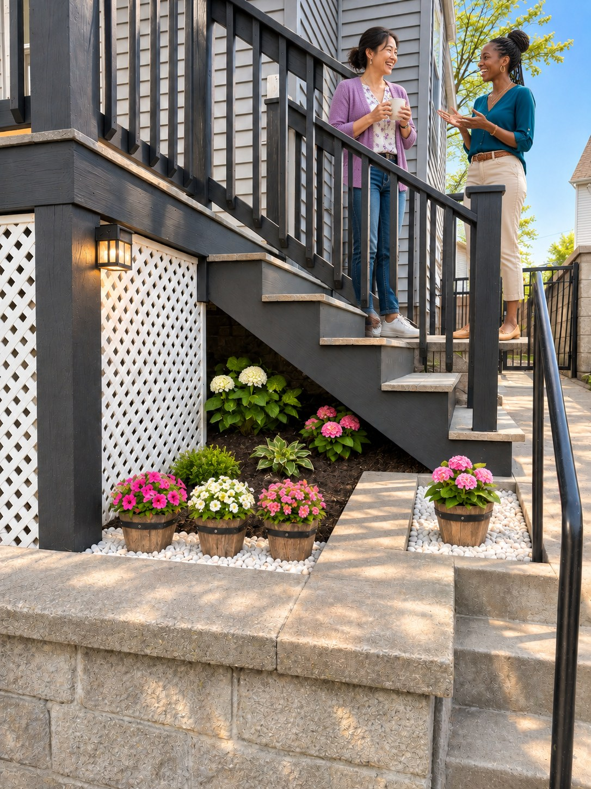

631 Public Street · Providence
A sober living residence dedicated to women, and the designated location for the HOS RI sober residence office.
Explore the Providence residence vision
Welcome to House of Shammah RI
Explore our Providence and Warwick residential models, then talk with us about what you need.
One organization. Different residential models.
House of Shammah RI serves people of all sexes through different residential models. Each location has its own resident community and purpose.
A sober living residence dedicated to women, and the designated location for the HOS RI sober residence office.
Explore the Providence residence visionA mixed residence mainly serving older adults. This is a distinct residential model within House of Shammah RI.
Explore the Warwick welcomeContact HOS RI to discuss the appropriate location, its services, eligibility and current availability.
Two homes. Two welcoming communities.

A women’s sober living residence and the designated HOS RI sober residence office.

A mixed residence mainly serving older adults.
631 Public Street · Women’s residence · Providence
The following illustrations are Providence design concepts inspired by the actual property. They show design plans for the Providence residence; furnishings, renovations and occupancy remain subject to confirmation.
Proposed aesthetics and community scenes
Closets, rugs, white stones, lighting and furniture arrangements shown here are proposals. The bunk bedroom is a future-project concept. Parking markings are illustrative.








Your next step
Rhode Island and out-of-state applicants are welcome to inquire.